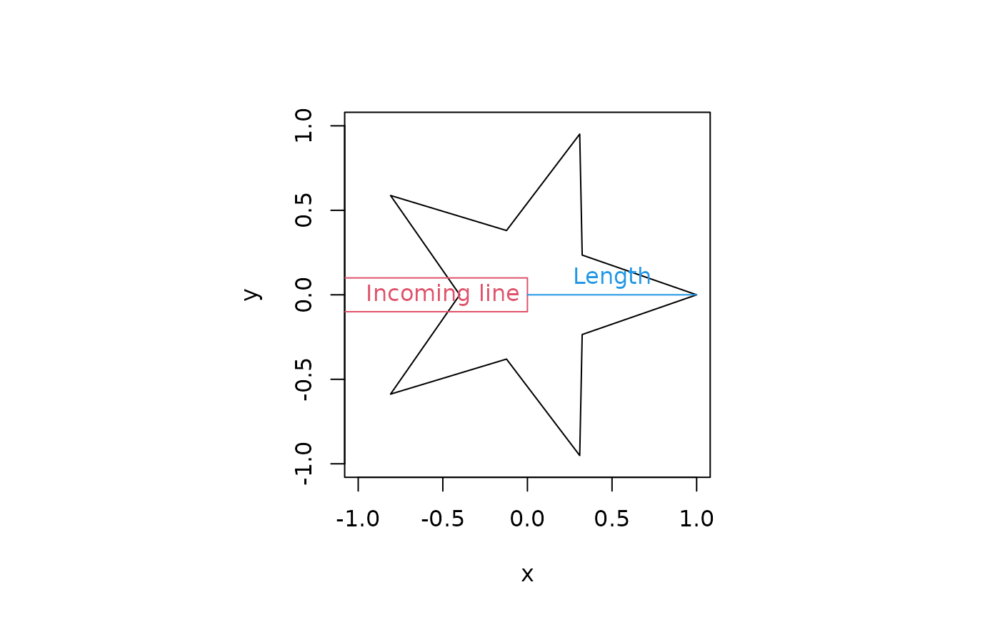
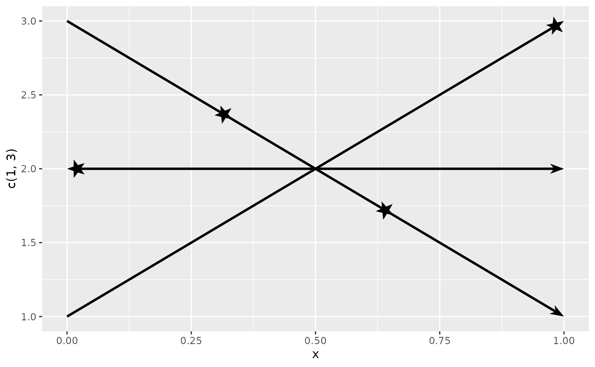

Arrow Ornaments
ornaments.RmdArrow ornaments come in two main varieties: head ornaments and fins ornaments. These are respectively placed at the end and start of a line. This vignette introduces the built-in arrow ornaments.
Head ornaments
Head ornaments are the ‘arrowhead’ ornaments at the end of a line.

Wings
The ‘wings’ ornament places two symmetric triangles on either side of
the line, and can be called using the arrow_head_wings()
function. The offset parameter determines at what angle the
triangle departs from the line end. The inset parameter
determines the angle inside the corner that is not on the line. If you
ensure that inset + offset equals 90, you can mimic
grid::arrow(..., type = "closed") (2nd example). The
length_head arguments determines the distance between the
red line at the arrow tip and the blue line, where the triangle re-joins
the line.

Below you can get an impression what kinds of shapes you can make with the wings arrowhead.

Line
The ‘line’ ornament draws two line segments departing from the line
end, and can be set using the arrow_head_line() argument.
The linewidth aesthetic determines the thickness of the
departing line, in that the line width is the same between the path and
the ornament. The size of the arrow is once again determined by the
length_head argument, but now encompasses the length of the
protruding lines instead of the reconnection point back on the path.


Extending ornaments
In principle, extending ornaments is as straightforward as being able
to construct a polygon in an xy-coordinate matrix with x as
the first column and y as the second column.
my_ornament <- function(n = 5) {
t <- seq(0, 2 * pi, length.out = n * 2 + 1)[-(n * 2 + 1)]
l <- rep(c(1, 0.4), length.out = length(t))
cbind(
x = cos(t) * l,
y = sin(t) * l
)
}We can inspect the coordinates of our new ornament. It is ggarrow’s convention that the line joins the ornament at the (0,0) coordinate. Also, the tip of the ornament is expected to be at the (1,0) coordinate.
orn <- my_ornament(5)
# Plot ornament
par(pty = "s")
plot(orn, type = "n", xlim = c(-1, 1), ylim = c(-1, 1))
polygon(orn[, "x"], orn[, "y"])
# Incoming line
lines(debug_notching(orn, 0.2), col = 2)
# Length measurement
lines(x = c(0, 1), y = c(0, 0), col = 4)
text(x = 0.5, y = 0.1, labels = "Length", col = 4)
text(x = -0.5, y = 0, labels = "Incoming line", col = 2)
You can now use your ornament as the arrow_head,
arrow_fins and arrow_mid arguments.
ggplot(data = data.frame(x = c(0, 1)), aes(x = x)) +
geom_arrow(aes(y = c(1, 3)), arrow_head = orn) +
geom_arrow(aes(y = c(2, 2)), arrow_fins = orn) +
geom_arrow(aes(y = c(3, 1)), arrow_mid = orn, mid_place = c(0.33, 0.66))